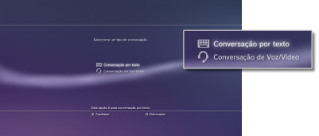
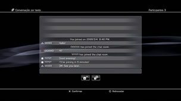

Amigos > Conversação por texto > Iniciar ou abandonar uma conversação por texto
Iniciar ou abandonar uma conversação por texto
Para utilizar esta função, poderá ter de actualizar o software de sistema.
Pode entrar numa conversação por texto com pessoas da sua lista de Amigos.
Iniciar uma conversação por texto
1. |
Seleccione |
|---|---|
2. |
Seleccione |
|
 |
|
3. |
Introduza um nome para a sala de conversação por texto e, em seguida, seleccione [OK]. |
4. |
Seleccione os Amigos que pretende convidar para a conversação e, em seguida, seleccione [OK]. |
|
 |
 (Iniciar Nova Conversação).
(Iniciar Nova Conversação). (Conversação por texto).
(Conversação por texto).Notas
- Deve estar ligado à PlayStation®Network para efectuar conversação por texto.
- No caso da conversação por texto, não é enviada uma mensagem de convite para conversação.
- Podem estar até 16 pessoas numa sala de conversação por texto.
- A função de conversação por texto não pode ser utilizada se tiverem sido definidas restrições à sua utilização nas definições da conta PlayStation®Network. Para mais informações sobre definições de controlo parental, consulte [Sobre a XMB™] > [Utilizar as definições de controlo parental] neste manual.
Entrar numa sala de conversação por texto
Se for convidado a entrar numa conversação por texto, será apresentada uma mensagem de notificação no canto superior direito do ecrã. Seleccione  (Sala de Conversação (Apenas Texto)) em
(Sala de Conversação (Apenas Texto)) em  (Amigos) e, em seguida, seleccione a sala de conversação à qual se pretende juntar.
(Amigos) e, em seguida, seleccione a sala de conversação à qual se pretende juntar.
Notas
- Se a opção [Não Apresentar] estiver definida em [Mensagens de Notificação] em
 (Definições) >
(Definições) >  (Definições de Sistema), as mensagens de notificação não serão apresentadas.
(Definições de Sistema), as mensagens de notificação não serão apresentadas. - Na maioria dos jogos, pode juntar-se a uma conversação por texto durante um jogo. Prima o botão PS do сomando sem fios e, em seguida, seleccione a sala de conversação à qual se pretende juntar em (Amigos) > (Sala de Conversação (Apenas Texto)). Prima o botão PS para regressar ao ecrã do jogo.
- Pode juntar-se até três salas de conversação ao mesmo tempo. Se juntar-se a uma quarta sala de conversação, sairá automaticamente da primeira sala à qual se juntou.
- Podem ser apresentadas até 20 salas de conversação em (Sala de Conversação (Apenas Texto)). Quando houver mais do que 20 salas de conversação, as mais antigas serão automaticamente eliminadas à medida que forem sendo abertas novas.
Sair de uma sala de conversação
Prima o botão  para fechar o ecrã da conversação por texto. Seleccione a sala de conversação da qual pretende sair, prima o botão
para fechar o ecrã da conversação por texto. Seleccione a sala de conversação da qual pretende sair, prima o botão  e, em seguida, seleccione [Sair] no menu das opções.
e, em seguida, seleccione [Sair] no menu das opções.
Nota
Se desligar o sistema PS3™ ou cancelar o registo na PlayStation®Network, sairá automaticamente da sala de conversação. Se voltar a juntar-se a uma sala de conversação da qual saiu, não será apresentado o registo das entradas de conversação enviadas enquanto esteve fora.
Eliminar uma sala de conversação
Seleccione a sala de conversação que pretende eliminar, prima o botão e, em seguida, seleccione [Eliminar] no menu das opções.
Utilizar o painel de controlo das opções
Pode efectuar as seguintes operações utilizando o painel de controlo das opções da conversação por texto.
 |
Convidar um amigo | Convide um amigo a juntar-se à sala de conversação por texto |
|---|---|---|
 |
Lista de Participantes | Ver uma lista das pessoas que participam na sala de conversação |